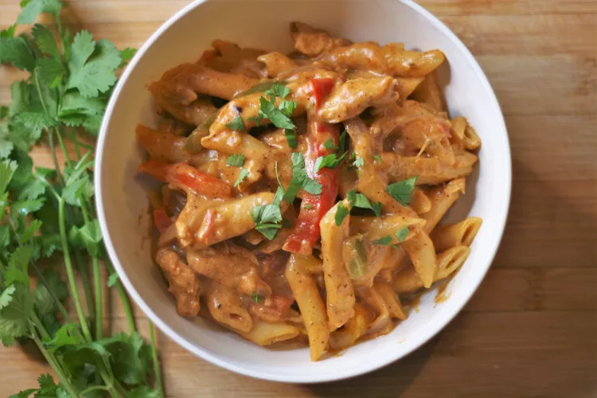

Creamy Chicken Fajita Recipe

How to Make it
This chicken fajita pasta dish has all the flavors of classic Mexican chicken fajitas. It's easy to make in one pot for a fantastic midweek dinner!
Ingredients
- 2 tablespoons chili powder
- 1 tablespoon cumin
- 2 teaspoons salt
- 1 teaspoon onion powder
- 1 teaspoon garlic powder
- 1 teaspoon Mexican oregano
- 1 ½ pounds chicken breasts, cut into strips.
- 2 tablespoons olive oil, divided
- 1 red onion, peeled and cut into ½-inch wedges
- 4 garlic cloves, minced
- 1 cup chicken broth, or more as needed
- 1 cup salsa
- 4 cups milk
- 1 pound penne pasta
- 4 cups shredded Mexican 4-cheese blends
How to Make it Step-By-Step
- Combine chili powder, cumin, salt, onion powder, garlic powder, and Mexican oregano in a small bowl for the seasoning blend. Season chicken with half of the seasoning; reserve remaining seasoning for later.
- Heat 1 tablespoon olive oil in a large pot over medium-high heat. Add chicken strips and cook until lightly browned, about 5 minutes. Transfer chicken to a plate.
- Heat remaining oil in the same pot. Add onion and garlic; cook and stir until softened, about 2 minutes. Stir in 1 cup chicken broth and salsa, scraping the browned bits of food off the bottom of the pan with a wooden spoon.
- Add milk and dry pasta to the pot and stir to combine. Add chicken and bell peppers on top and bring to a boil. Reduce heat to a light simmer and cook, gently stirring every 4 to 5 minutes, until pasta is cooked through and sauce has thickened, about 20 minutes. Try and keep noodles as submerged as possible while cooking. If the consistency becomes too thick, add a bit more chicken broth.
- Season with remaining seasoning blend, to taste. Stir in Mexican cheese and combine until melted. Sprinkle with cilantro to serve.